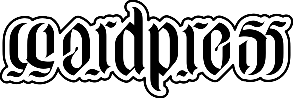
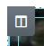
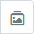
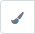

Reprendre le projet "Questions sur les thèmes" ou bien prendre une nouvelle installation de WordPress et ajouter 5 pages FakerPress avec photos.
Bravo
Reprendre le projet "Questions sur les thèmes" ou bien prendre une nouvelle installation de WordPress et ajouter 5 pages FakerPress avec photos.
Installer et activer l'extension Elementor
Aller modifier la page "Contact" et cliquer sur Modifier avec Elementor. On peut également créer une toute nouvelle page.
Créer 2 sections : une section avec deux colonnes et une section avec une seule colonne.
Dans la première colonne, ajouter un bloc de texte dans lequel il n'y aura que l'image ⭳.
La première colonne  a une série d'images en arrière-plan  qui changent à interval régulier. Ajouter 3 images de la médiathèque. Quel est l'interval en question ?
Modifier colonne ⇒ Style ⇒ Arrière-plan )La première colonne a également une bordure double et les coins arrondis. Où se trouve cette option?
Modifier colonne ⇒ Style ⇒ BordureLa deuxième colonne contient une image et un bouton. Prendre n'importe quelle photo de la médiathèque. Le bouton est centré et a une icone. Peut-on mettre plusieurs blocs différents dans la même colonne?
Pour le bouton, au survol de la souris, sa couleur devient "Principal" (couleur globale). S'amuser également à ajouter une "Animation au survol".
Modifier Bouton ⇒ Style ⇒ Survol ⇒ Couleur d'arrière-plan ⇒ La section en-dessous, contient un bloc "Carrousel d'images". La couleur des flèches a été modifiée.
Modifier Bouton ⇒ Style ⇒ Survol ⇒ Couleur d'arrière-plan ⇒ La petite terreLa 2e partie est composée de 3 sections. Créer tout de suite 3 sections de 1 colonne.
L'arrière-plan de la 1re section est composé d'une image unique qui reste fixe lorsque l'on fait défiler la page. Choisir une image de la médiathèque. Pour agrandir la section, y mettre un bloc "Espacement" d'une hauteur de 150px.
Modifier Colonne ⇒ Style ⇒ Type d'arrière-plan ⇒ Dans la 2e section, mettre un titre et une zone de texte.La zone de texte doit être disposée en 2 colonnes.
Ajouter une seule section pour la troisième partie. On aura besoin des blocs suivants : Diviseur, Éditeur de texte, Image, Titre, Section interne et Menu de navigation. Remarquer les détails suivants :
{kind=link}